Lasagna Bolognese
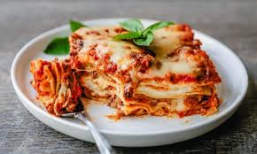
Description
This delicious Classic Lasagna Bolognese Recipe is layered with homemade pasta, bechamel, and bolognese for an unforgettable meal. Consequently, If you’re looking to get a lasagna recipe straight from Italy, then this version is exactly that.
Ingredients
- Pasta - Homemade pasta works the best for this recipe
- Bechamel - Bechamel sauce is used between the layers of the lasagna
- Bolognese - Bolognese sauce made with mirepoix, garlic, olive oil, pork, beef, and tomatoes
- Cheese - We will use a combination of Provolone, Parmigiano Reggiano and Mozzarella
Steps
-
Process the onions, celery, carrots, and garlic in a food processor until finely minced.
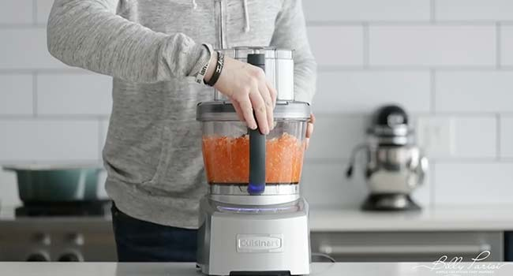
-
Pour 3 tablespoons of oil into a large pot over medium heat.
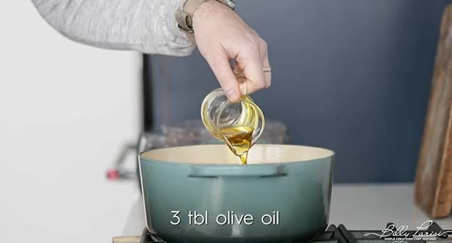
-
Add the minced vegetables and saute/sweat them for 4 to 6 minutes while frequently stirring.
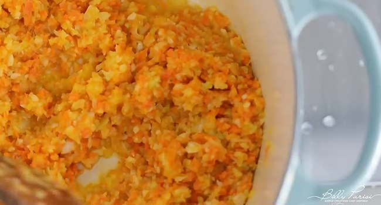
-
Next, add in the ground pork and beef and cook until it is well browned and cooked throughout.
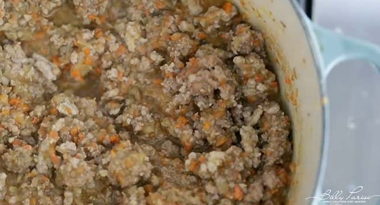
-
Deglaze with wine and then pour in the hand-crushed tomatoes, salt, and pepper, and mix to combine. Simmer over low heat until it’s ready to be used.
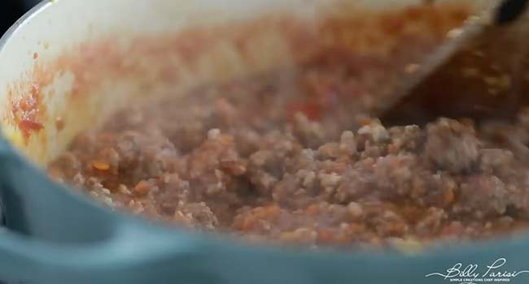
-
In the meantime, make your pasta dough.
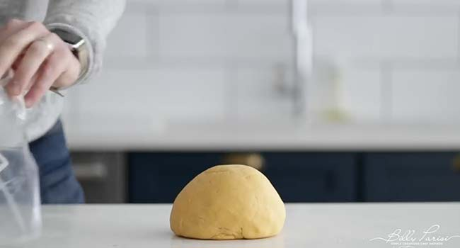
-
Once the dough is rolled out, cut each sheet into 9″ to 11″ long pieces. Set it to the side on a clean surface dusted with flour until it is ready to be boiled.
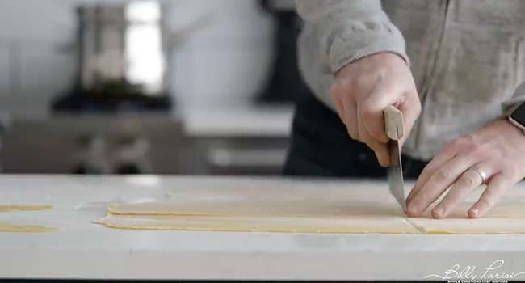
-
Make the bechamel sauce and keep it warm over low heat.
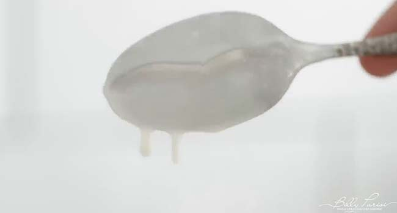
-
Boil about 6 to 7 pasta sheets at a time in a large pot of boiling salted water for 20 to 30 seconds.
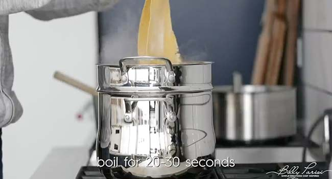
-
Remove the pasta and set them on a clean kitchen towel separate from one another so that they are easy to grab.
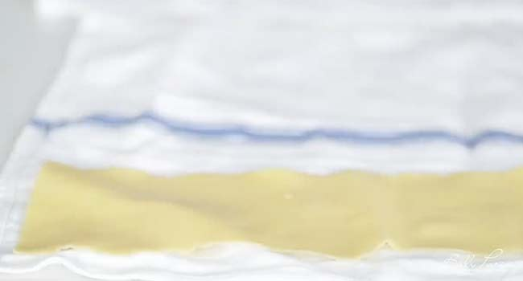
-
Place a small amount of bechamel sauce to the bottom of a lasagna pan.
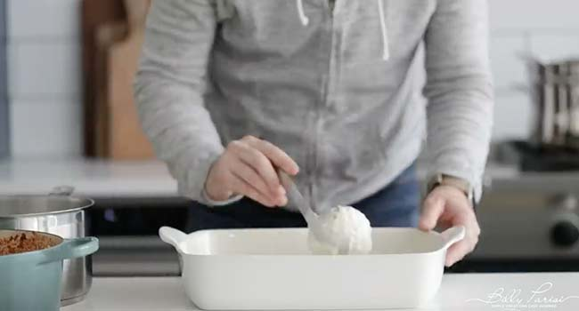
-
Next, do the same with the Bolognese sauce.
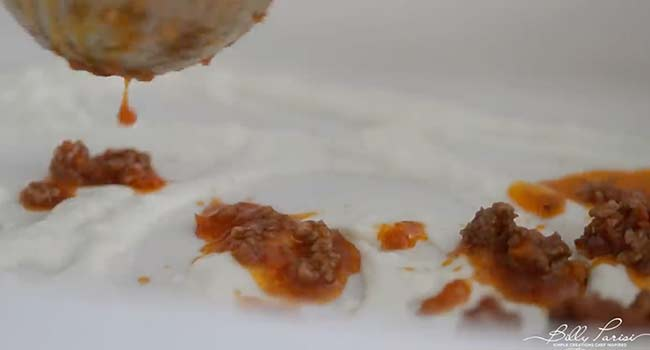
-
Add a layer of cooked pasta to completely cover both sauces.
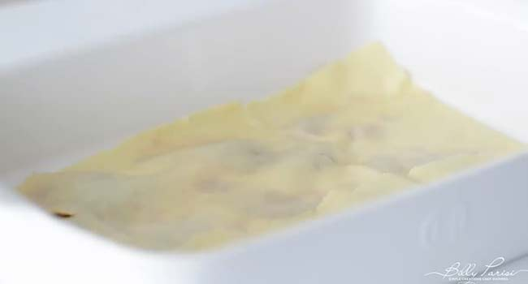
-
Add on both of the sauces in the same manner and then sprinkle a 1/4 cup of mozzarella mozzarella and 2 tablespoons of parmesan.
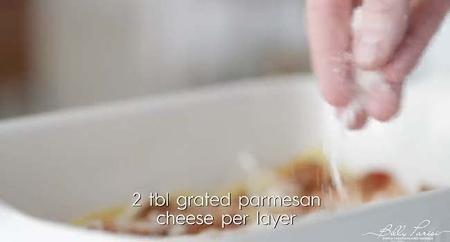
-
Repeat the process until the pasta, sauces and cheeses have been used.
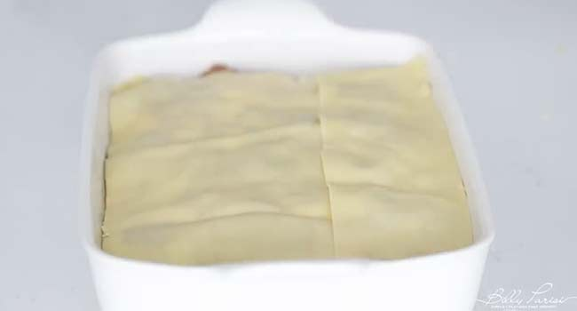
-
Save a good amount of the bechamel to pour over the top of everything at the end.
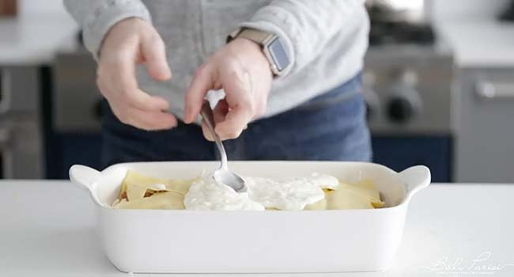
-
Add the remaining bolognese sauce over the top. Be sure there is plenty left to be able to do this. Finish by sprinkling on the remaining cheeses to cover every thing
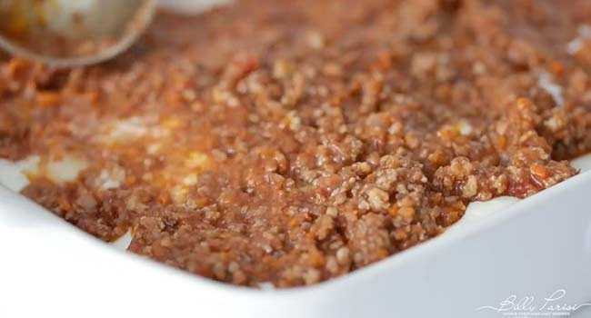
-
Finally, bake at 400° for 35 to 40 minutes or until browned and crispy in the corners. Let the lasagna sit at room temperature for 10 to 15 minutes before slicing and serving.
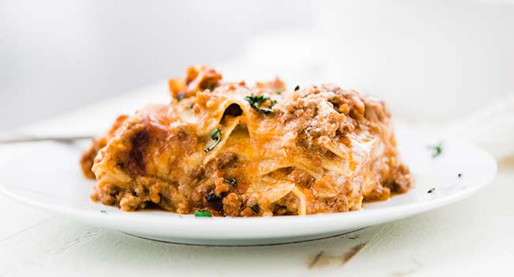